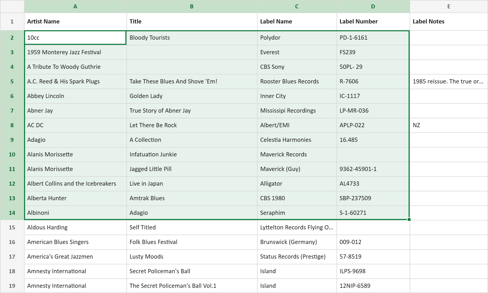

About
The Story Behind Vinyl Curator
Where it started · the original catalogue, including coffee stains…
Coming on 30 years ago I opened a bar and café at a mountain ski resort in Japan. It was going to be a sports bar — that was the whole plan — until I discovered jazz and fell hard for it, and the place quietly morphed into a jazz bar and café instead. My taste was eclectic and stayed that way, but the addition of jazz started a passion for original pressings from the '50s and '60s — records that carry a real aura for Japanese collectors. What began as trading increasingly rare jazz originals slowly inverted itself: I bought more than I sold, then I mostly stopped selling at all. That's how collections begin — not with a decision, but with a deepening reverence for the music and the medium, the art on the covers and the history in the grooves.
The collection has since crossed the Pacific twice. Japan to New Zealand, where I'm from, then on to Chicago, with stops in more cities along the way than my record boxes would care to remember. Like me, it's grown with the miles — more titles, more genres, more shelves — and there's an ever-present voice telling me to buy more vinyl. There are worse addictions.
I always kept it insured, along with the equipment, but an insurance policy only answers half the question. The other half kept nagging at me: if the worst happened — fire, flood, theft — how would I ever prove what I actually had? Not "about 2,000 records." These records. These pressings. I kept a written ledger of everything I bought, and some years ago moved it into a spreadsheet. Better. Not enough.

Lately I've become more forensic about it. New arrivals get the full treatment: matrix numbers pulled from the deadwax, pressing research, the lot. Then I pulled out a stack of duplicates to sell, and every frustration arrived at once. Two thousand albums, most without that research behind them. Photographing and listing records is slow, tedious work. Getting complete, correct information onto a listing is neither easy nor intuitive. And underneath it all, the old worry with a new face: what would my wife or kids ever do with this collection? How would they assess it, understand it, and get fair value for it if I weren't here to explain what a Plastylite ear means?
There was one more thread. When friends come over for a listening session, someone always asks to see the cover of what's playing. It gets passed around the room, and I found myself thinking: how much better if I could hand them the real thing — everything a streaming service gives you, plus the pressing history and the performance and fidelity notes — right on their phone.
All of that led down the rabbit hole you've just landed in. Vinyl Curator started as me solving my own conundrum. It grew past the original problem, as these things tend to, and became a set of tools and services I wanted other collectors — and dealers, and the families of collectors — to have too.
Wherever you sit — a collector who needs a collection documented to insure it or settle a claim, an insurance broker or valuer who has to substantiate what's actually there, or a dealer, trader, or record store that lives or dies by accurate, detailed listings — the problem is the same: a collection is only as good as your ability to prove and explain what's in it. That's what Vinyl Curator is here to solve — right down to bulk-listing straight to eBay and Discogs.